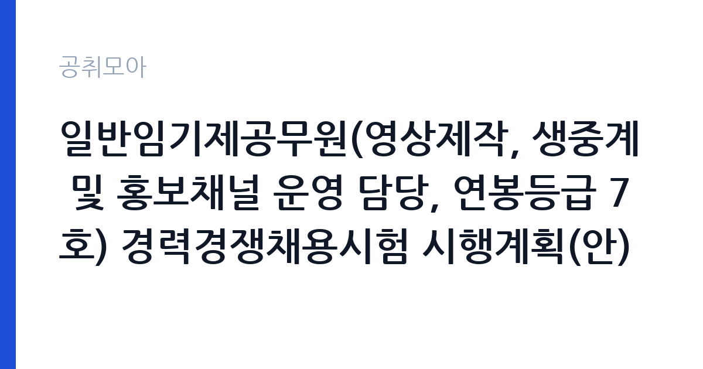

[국가기관] 일반임기제공무원(영상제작, 생중계 및 홍보채널 운영 담당, 연봉등급 7호) 경력경쟁채용시험 시행계획(안) 공고
대법원 법원행정처 · 서울 · 마감 2026-10-28 (D-15) · 출처 나라일터

한눈에 보는 모집 조건
| 기관 | 대법원 법원행정처 |
|---|---|
| 공고명 | 일반임기제공무원(영상제작, 생중계 및 홍보채널 운영 담당, 연봉등급 7호) 경력경쟁채용시험 시행계획(안) 공고 |
| 고용형태 | 임기제 |
| 근무지 | 서울 |
| 게시일 | 2026-10-14 |
| 마감일 | 2026-10-28 (D-15) |
지원자격, 이렇게 읽으세요
- 일반임기제(연봉등급7호) 1명
- 접수 ~2026-10-28 마감
- 세부 조건은 원문 공고문 확인
경력경쟁채용이므로 영상제작·생중계·홍보채널 운영 분야의 실무 경력이 핵심 심사 요소입니다. 세부 응시자격(학위·경력연수·자격증 등)은 붙임 시행계획 공고문에 제시되어 있으니 원문에서 반드시 대조하시기 바랍니다. 국가공무원법과 법원공무원규칙에 따른 임용 결격사유 해당자는 지원하실 수 없습니다. 연봉등급 7호는 경력과 직무 난이도에 대응하는 등급이므로, 본인의 경력이 등급 기준에 맞는지 원문으로 확인하시기 바랍니다.
이 공고의 포인트
첫 번째 포인트는 법원행정처라는 근무처의 상징성입니다. 사법부 중앙행정기관의 홍보를 총괄하는 자리라 포트폴리오 가치가 큽니다. 두 번째로 영상제작부터 생중계, 채널 운영까지 한 사람이 총괄하는 구조라 기획·촬영·편집·송출 역량을 한 번에 발휘하실 수 있습니다. 세 번째로 일반임기제는 연봉제 기반의 경력직이라 호봉제 일반직과 달리 경력에 따른 보수 협의가 이루어지는 구조입니다.
전형은 어떻게 진행되나
전형은 서류전형과 면접시험으로 진행되는 것이 일반적이며, 세부 일정과 제출 서류는 나라일터와 법원행정처 홈페이지의 원문에서 확인하시기 바랍니다. 서류에서는 영상 분야 경력과 포트폴리오의 완성도가 핵심이므로, 대표작 링크와 본인 기여도를 명확히 정리하시기 바랍니다. 면접에서는 법원 홍보의 특성과 생방송 대응 역량을 중심으로 물을 가능성이 높으니, 관련 경험을 사례로 준비하시기 바랍니다.
원문에서 확인한 전형 방식
국가공무원법 제26조의5, 제28조제2항제3호, 법원공무원규칙 제4조의2 및 제19조제1항, 법원공무원 인사관리예규 제65조에 따라 일반임기제공무원(영상제작, 생중계 및 홍보채 널 운영 담당, 연봉등급 7호) 경력경쟁채용시험 시행계획을 붙임과 같이 공고합니다.
이런 분께 추천해요
- 영상 기획·촬영·편집과 생중계 실무 경력을 갖춘 영상 전문가
- 공공기관·언론사 홍보 채널 운영 경험이 있는 콘텐츠 제작자
- 사법부 홍보라는 상징성 있는 무대에서 일하고 싶은 크리에이터
지원 전 체크리스트
- 붙임 공고문의 세부 응시자격(경력연수·학위·자격) 충족 여부 확인
- 포트폴리오 대표작과 본인 기여도 정리 여부 확인
- 임용 결격사유(국가공무원법·법원공무원규칙) 비해당 여부 확인
- 근무지(서울 서초 법원행정처) 출퇴근 가능 여부 확인
모집 일정과 제출 타이밍
접수는 2026년 10월 14일 게시 이후 10월 28일에 마감됩니다. 이후 서류전형 합격자 발표와 면접시험, 임용 순으로 이어지며, 확정 일정은 나라일터 원문과 법원행정처 공지에서 확인하시기 바랍니다. 포트폴리오 파일의 용량과 제출 형식을 미리 점검해 마감 당일 오류가 없도록 하시기 바랍니다.
직무 이해하기: 국가기관
담당 업무는 법원 홍보 영상의 기획·제작과 재판·행사 생중계, 유튜브 등 홍보채널 운영입니다. 법원행정처는 법원TV와 보도자료, 뉴미디어 콘텐츠를 통해 사법 정보를 국민에게 전달하고 있습니다. 촬영 현장 섭외부터 편집·자막·썸네일 제작, 생중계 송출 운용과 채널 분석까지 전 과정을 맡습니다. 민감한 사법 현안을 다루는 만큼 보도 윤리와 보안 인식도 요구됩니다.
자기소개서 작성 팁
응시원서와 자기소개서에서는 대표작 2~3편을 골라 기획 의도와 본인 역할, 조회수·반응 같은 성과를 수치로 제시하시기 바랍니다. 생중계 경험이 있다면 동시접속 규모와 돌발 상황 대처 사례를 구체적으로 쓰시기 바랍니다. 법원 홍보라는 특수성을 이해하고 있다는 점을, 사법 정보 전달의 공익성과 연결해 서술하시면 좋습니다.
면접 준비 포인트
면접에서는 포트폴리오 대표작의 제작 과정을 질문받을 가능성이 높으니, 기획부터 납품까지의 의사결정을 정리해 두시기 바랍니다. 생중계 중 송출 장애가 발생했을 때의 대응 절차를 묻는다면 백업 회선과 커뮤니케이션 체계를 먼저 언급하시기 바랍니다. 법원이라는 기관의 중립성과 품위를 영상에 어떻게 담을지에 대한 본인의 관점을 준비하시기 바랍니다.
급여·근무조건 읽는 법
연봉등급 7호의 임기제공무원은 호봉제가 아닌 연봉제로 보수를 받으며, 등급별 상·하한액 범위 안에서 경력 등을 고려해 결정되는 구조입니다. 확정 금액은 원문 공고의 보수 조건과 임용 협의 과정에서 확인하시기 바랍니다. 참고로 2026년 일반직 7급 1호봉 기본급은 월 2,317,100원(인사혁신처 공무원봉급표 기준)이나, 임기제 연봉등급 체계와는 별개이므로 직접 비교는 삼가시기 바랍니다. 수당과 복리후생의 세부 구성도 원문에서 확인하시기 바랍니다.
자주 묻는 질문
- 연봉등급 7호는 어느 정도 수준인가요?
일반임기제공무원의 연봉등급은 직무 난이도와 요구 경력에 따라 1호부터 10호까지 구분되며, 등급별 상·하한액 범위 안에서 임용 시 협의로 정해집니다. 본 공고의 등급 기준과 협의 범위는 원문에서 확인하시기 바랍니다. - 근무 기간은 어떻게 되나요?
일반임기제공무원은 최초 임용 시 정해진 근무기간 동안 근무하며, 성과에 따라 연장될 수 있습니다. 본 공고의 근무기간과 연장 조건은 원문에서 확인하시기 바랍니다. - 포트폴리오는 어떻게 제출하나요?
제출 형식과 분량, 링크 허용 여부 등은 붙임 공고문과 나라일터 접수 안내에 제시되어 있습니다. 파일 용량 제한을 초과하지 않도록 사전에 확인하시기 바랍니다.
함께 보면 좋은 공고
[국가기관] 국립목포대학교 입학사정관 채용 공고 (경력 무관) — 마감 2026-10-15[국가기관] 별정직 공무원(5급 상당 이하) 채용시험 일정 변경공고 — 마감 2026-10-13[국가기관] 2026년 제3차 마산지방해양수산청 청년인턴 채용공고 — 마감 2026-10-26출처: 나라일터 공개정보를 바탕으로 공취모아가 정리한 안내글입니다. 모집 조건·일정은 변경될 수 있으니 지원 전 반드시 원문 공고문을 확인하세요. 본 글은 정보 제공용이며 합격을 보장하지 않습니다.